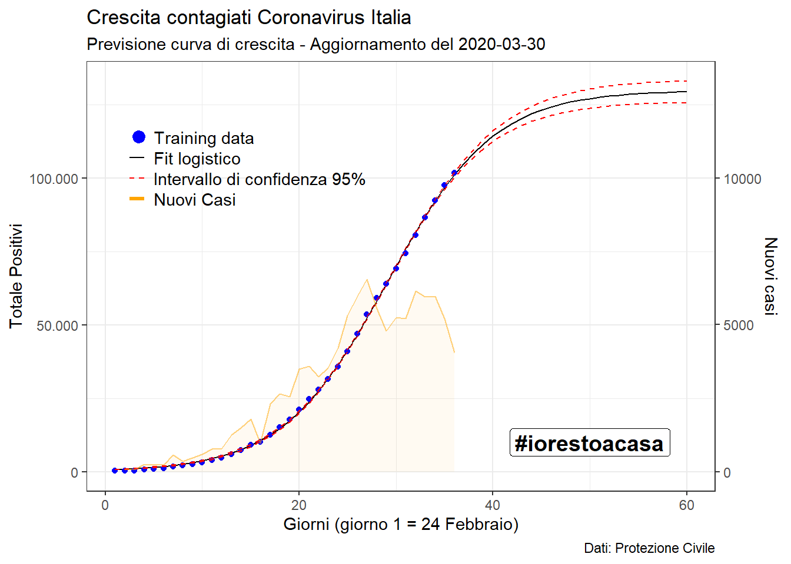

library(dplyr)
library(drc)
library(lubridate)
library(ggplot2)
library(scales)
theme_set(theme_bw())
# get the data
covid_italy_sum <- read.csv("https://raw.githubusercontent.com/pcm-dpc/COVID-19/master/dati-andamento-nazionale/dpc-covid19-ita-andamento-nazionale.csv")maxrange <- 60
x <- 1:maxrange
nn <- 0 # test
cov_tot <- rep(NA,maxrange)
gg <- length(covid_italy_sum$totale_casi)
cov_tot[1:(gg-nn)] <- covid_italy_sum$totale_casi[1:(gg-nn)]
xy <- data.frame(x=x,y=cov_tot)# fitting logistico
model <- drm(y ~ x, fct = L.3(), data = xy[1:(gg-nn),])summary(model)##
## Model fitted: Logistic (ED50 as parameter) with lower limit fixed at 0 (3 parms)
##
## Parameter estimates:
##
## Estimate Std. Error t-value p-value
## b:(Intercept) -1.9632e-01 3.1371e-03 -62.581 < 2.2e-16 ***
## d:(Intercept) 1.1389e+05 2.8808e+03 39.535 < 2.2e-16 ***
## e:(Intercept) 2.7747e+01 2.7113e-01 102.339 < 2.2e-16 ***
## ---
## Signif. codes: 0 '***' 0.001 '**' 0.01 '*' 0.05 '.' 0.1 ' ' 1
##
## Residual standard error:
##
## 518.3953 (28 degrees of freedom)# prediction
xy_fit <-
predict(model,xy,interval = 'confidence') %>%
as.data.frame()# plot fitting
nomodel <- rep(NA,maxrange)
nomodel[(gg-nn+1):gg] <- covid_italy_sum$totale_casi[(gg-nn+1):gg]
y_text <- 40000
nuovicasi <- rep(NA,maxrange)
nuovicasi[1:gg] <- (covid_italy_sum$totale_casi - lag( covid_italy_sum$totale_casi ) )*10
ggplot(xy_fit,aes(x=1:maxrange,y=Prediction)) +
geom_line() +
geom_point(colour="blue",aes(y=xy$y)) +
geom_point(colour="red",aes(y=nomodel),shape=15,size=2) +
geom_line(aes(y = Lower), color = "red", linetype = "dashed")+
geom_line(aes(y = Upper), color = "red", linetype = "dashed")+
geom_line(aes(y = nuovicasi),color = 'orange', alpha = .5) +
geom_area(aes(y = nuovicasi),fill = 'orange', alpha = .05) +
#-- ITALY
annotate(geom = "text", x = 5, y = 74000+y_text,
label = "Training data", hjust = 0) +
annotate("pointrange", x = 3.5, y = 74000+y_text, ymin = 73500+y_text,
ymax = 73500+y_text,colour = "blue", size = 0.7)+
#-- FIT
annotate(geom = "text", x = 5, y = 67000+y_text,
label = "Fit logistico", hjust = 0) +
annotate(geom = "segment", x = 2.5,xend = 4,
y = 67000+y_text,yend=67000+y_text) +
#-- CONF
annotate(geom = "text", x = 5, y = 60000+y_text,
label = "Intervallo di confidenza 95%", hjust = 0) +
annotate(geom = "segment", x = 2.5,xend = 3,
y = 60000+y_text,yend=60000+y_text, colour="red") +
annotate(geom = "segment", x = 3.5,xend = 4,
y = 60000+y_text,yend=60000+y_text, colour="red") +
#-- NUOVI CASI
annotate(geom = "text", x = 5, y = 53000+y_text,
label = "Nuovi Casi", hjust = 0) +
annotate(geom = "segment", x = 2.5,xend = 4,
y = 53000+y_text,yend=53000+y_text,color="orange",size=1.1) +
#-- Test
annotate(geom = "text", x = 5, y = 46000+y_text,
label = "Test data", hjust = 0) +
annotate(geom="rect",xmin=3, xmax=3.6, ymin=44000+y_text , ymax=47000+y_text, color="red", fill="red") +
#-- Restoacasa
geom_label( aes( x=50, y=10000, label="#iorestoacasa"),
color="black",
size=5 , fontface="bold" )+
scale_y_continuous(
label = comma_format(big.mark = ".", decimal.mark = ","),
"Totale Positivi",
sec.axis = sec_axis(~ . / 10, name = "Nuovi casi") ) +
#-- #iorestoacasa
labs(title = "Crescita contagiati Coronavirus Italia ",
subtitle = paste0("Previsione curva di crescita - Aggiornamento del ", Sys.Date() ),
caption = "Dati: Protezione Civile",
x = "Giorni (giorno 1 = 24 Febbraio)",
y = "Totale Positivi")